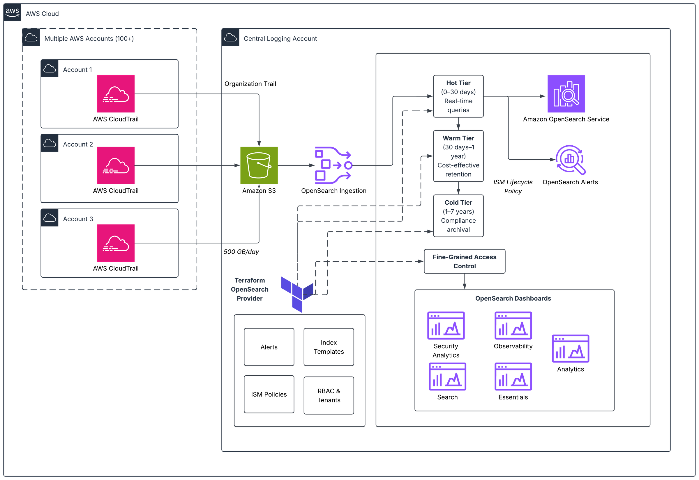

在数十或数百个AWS账户中运行工作负载的组织面临一个常见挑战：大规模集中式安全监控。安全团队需要每天搜索数百GB的AWS CloudTrail日志，以检测威胁并满足SOC 2、PCI DSS和HIPAA审计的合规要求。他们还需要为职责不同的多个团队提供基于角色的访问。
如果没有专用基础设施，这通常涉及耗时数小时的手动日志搜索和耗时数天的合规报告生成。它还导致跨环境管理索引生命周期的自定义AWS Lambda函数代码库碎片化。一个没有一致访问控制的共享搜索域进一步加剧了问题。
在本文中，我们展示了如何在Amazon OpenSearch Service上构建集中式CloudTrail监控解决方案。Terraform管理整个堆栈，从域配置到访问控制和生命周期策略。该解决方案处理每天200GB的CloudTrail日志，提供自动威胁检测警报，并为4个不同团队提供隔离的、适合角色的数据访问。
解决方案概述
下图显示了架构。CloudTrail日志通过组织跟踪从100多个AWS账户流入集中式S3存储桶。Amazon Simple Queue Service（Amazon SQS）通知触发OpenSearch Ingestion管道。该管道在2到10个OpenSearch计算单元（OCU）之间自动扩展，以将日志解析并索引到OpenSearch域中。四个团队特定角色通过OpenSearch Dashboards访问数据，并实现租户隔离。

关键组件包括：
- CloudTrail聚合。 组织跟踪将100多个账户的日志发送到集中式Amazon Simple Storage Service（Amazon S3）存储桶。
- 摄取。 Amazon OpenSearch Ingestion管道通过S3存储桶上的Amazon SQS通知拾取新日志。它根据队列深度在2到10个OCU之间自动扩展。较低环境队列上的限制可防止开发和测试峰值饿死生产摄取。
- Amazon OpenSearch Service域。 6个或1.4xlarge数据节点（OpenSearch优化实例）和3个专用r8g.large主节点，具有细粒度访问控制、静态加密和节点间加密。
- 基础设施即代码。 索引模板、索引状态管理（ISM）策略、角色、角色映射、租户、警报监控器和仪表板全部在Terraform中声明，并在环境中一致应用。
前提条件
要实现此解决方案，您需要以下各项：
- 在AWS Organizations中启用CloudTrail并在成员账户中启用的组织。
- Terraform v1.5+及AWS provider和OpenSearch provider。
- 具有用于OpenSearch域的私有子网的虚拟私有云（VPC）。
- 每个将访问OpenSearch域的团队的IAM角色。
- 用于安全警报通知的Amazon Simple Notification Service（Amazon SNS）主题。
- 熟悉Amazon OpenSearch Service、Terraform和AWS CloudTrail。
- 示例Terraform代码可在GitHub存储库
实现
本节逐步介绍解决方案每个组件的Terraform代码，从指导我们大小调整决策的工作负载配置文件开始。
工作负载配置文件
在调整集群大小之前，我们定义了集中式CloudTrail监控平台的工作负载特征和SLA：
| 指标 | 值 |
| 索引吞吐量 | 200 GB/天（约18,000文档/秒） |
| 搜索查询 | 约2,000查询/天（约0.023 QPS） |
| 平均搜索延迟 | < 100 ms（实现：76 ms） |
| 保存的搜索 | 600+ |
| 仪表板和可视化 | 100+ |
| 用户团队 | 4（安全运维、事件响应、合规、DevOps） |
| 保留期 | 30天（热层） |
| 可用性目标 | 99.9% |
这是一个写重的摄取工作负载。主要用例是自动警报和定期合规查询，而不是连续交互式搜索。此工作负载配置文件指导了使用OR1（存储优化）实例和零副本的决策，优先考虑索引吞吐量而非搜索并行性。
域配置
首先配置Amazon OpenSearch Service域，启用加密、细粒度访问控制和VPC放置：
resource "aws_opensearch_domain" "cloudtrail" {
domain_name = var.domain_name
engine_version = "OpenSearch_3.3"
cluster_config {
instance_type = "or1.4xlarge.search"
instance_count = 6
zone_awareness_enabled = true
zone_awareness_config {
availability_zone_count = 3
}
}
dedicated_master_config {
dedicated_master_enabled = true
dedicated_master_type = "r6g.large.search"
dedicated_master_count = 3
}
ebs_options {
ebs_enabled = true
volume_type = "gp3"
volume_size = 500
iops = 3000
throughput = 125
}
encrypt_at_rest { enabled = true }
node_to_node_encryption { enabled = true }
domain_endpoint_options {
enforce_https = true
tls_security_policy = "Policy-Min-TLS-1-2-PFS-2023-10"
}
advanced_security_options {
enabled = true
internal_user_database_enabled = false
master_user_options {
master_user_arn = var.master_user_arn
}
}
vpc_options {
subnet_ids = var.vpc_subnet_ids
security_group_ids = var.vpc_security_group_ids
}
tags = {
Environment = "production"
Project = "centralized-cloudtrail-monitoring"
ManagedBy = "terraform"
}
}此解决方案基于OR1实例构建，这些实例是存储优化的，使用Amazon Elastic Block Store（Amazon EBS）（gp3或io1）进行本地存储，数据到达时同步复制到Amazon S3。这种存储结构提供了更高的索引吞吐量，因为索引仅在主分片上执行。副本通过段复制由Amazon S3支持，消除了副本节点上文档复制的CPU开销。对于新部署，我们推荐OR2实例，与OR1相比，其索引吞吐量可提高高达26%，同时保持相同的存储优化架构。
摄取管道
Amazon OpenSearch Ingestion管道提供从Amazon S3到OpenSearch域的无服务器自动扩展摄取。它通过集中式S3存储桶上的Amazon SQS通知拾取新的CloudTrail日志，并根据队列深度在2到10个OpenSearch计算单元（OCU）之间扩展：
resource "aws_iam_role" "osis_pipeline" {
name = "cloudtrail-osis-pipeline-role"
assume_role_policy = jsonencode({
Version = "2012-10-17"
Statement = [{
Action = "sts:AssumeRole"
Effect = "Allow"
Principal = { Service = "osis-pipelines.amazonaws.com" }
}]
})
}
resource "aws_iam_policy" "osis_pipeline" {
name = "cloudtrail-osis-pipeline-policy"
policy = jsonencode({
Version = "2012-10-17"
Statement = [
{
Action = ["s3:GetObject", "s3:ListBucket"]
Effect = "Allow"
Resource = [var.cloudtrail_bucket_arn, "${var.cloudtrail_bucket_arn}/*"]
},
{
Action = ["sqs:ReceiveMessage", "sqs:DeleteMessage", "sqs:GetQueueAttributes"]
Effect = "Allow"
Resource = var.cloudtrail_sqs_queue_arn
},
{
Action = ["es:DescribeDomain", "es:ESHttp*"]
Effect = "Allow"
Resource = "${aws_opensearch_domain.cloudtrail.arn}/*"
}
]
})
}
resource "aws_iam_role_policy_attachment" "osis_pipeline" {
role = aws_iam_role.osis_pipeline.name
policy_arn = aws_iam_policy.osis_pipeline.arn
}
resource "aws_cloudwatch_log_group" "osis_pipeline" {
name = "/aws/vendedlogs/OpenSearchIngestion/cloudtrail-pipeline"
retention_in_days = 30
}
resource "aws_osis_pipeline" "cloudtrail" {
pipeline_name = "cloudtrail-ingestion"
pipeline_configuration_body = <<-EOT
version: "2"
cloudtrail-pipeline:
source:
s3:
notification_type: "sqs"
codec:
json:
compression: "gzip"
sqs:
queue_url: "${var.cloudtrail_sqs_queue_url}"
aws:
sts_role_arn: "${aws_iam_role.osis_pipeline.arn}"
region: "${data.aws_region.current.name}"
processor:
- date:
from_time_received: true
destination: "@timestamp"
sink:
- opensearch:
hosts: ["https://${aws_opensearch_domain.cloudtrail.endpoint}"]
index: "cloudtrail-%{yyyy.MM.dd}"
aws:
sts_role_arn: "${aws_iam_role.osis_pipeline.arn}"
region: "${data.aws_region.current.name}"
EOT
min_units = 2
max_units = 10
log_publishing_options {
is_logging_enabled = true
cloudwatch_log_destination {
log_group = aws_cloudwatch_log_group.osis_pipeline.name
}
}
tags = {
Environment = "production"
Project = "centralized-cloudtrail-monitoring"
ManagedBy = "terraform"
}
}该管道使用带有基于SQS通知的S3源插件。当新的CloudTrail日志文件到达S3时，SQS消息触发管道获取并解析它们。min_units和max_units参数控制自动扩展。管道从2个OCU开始，根据队列深度扩展到10个，无需手动干预即可处理摄取峰值。对于较低环境（开发和测试），您可以对Amazon SQS队列应用限制，以防止非生产峰值饿死生产摄取容量。
索引模板
提前定义索引模板，避免日后痛苦的重新索引。以下模板为 CloudTrail 字段设置显式映射，通过异步 translog 持久性优化写入吞吐量，并与 ISM 集成实现自动滚动：
resource "opensearch_index_template" "cloudtrail" {
name = "cloudtrail-template"
body = jsonencode({
index_patterns = ["cloudtrail-*"]
priority = 100
template = {
settings = {
number_of_shards = 6
number_of_replicas = 0
"index.refresh_interval" = "10s"
"index.translog.durability" = "async"
"index.translog.sync_interval" = "30s"
"plugins.index_state_management.rollover_alias" = "cloudtrail"
}
mappings = {
properties = {
"@timestamp" = { type = "date" }
eventSource = { type = "keyword" }
eventName = { type = "keyword" }
awsRegion = { type = "keyword" }
sourceIPAddress = { type = "ip" }
errorCode = { type = "keyword" }
errorMessage = { type = "text" }
recipientAccountId = { type = "keyword" }
userIdentity = {
properties = {
type = { type = "keyword" }
arn = { type = "keyword" }
accountId = { type = "keyword" }
userName = { type = "keyword" }
sessionContext = {
properties = {
sessionIssuer = {
properties = {
type = { type = "keyword" }
arn = { type = "keyword" }
userName = { type = "keyword" }
}
}
}
}
}
}
requestParameters = { type = "object", enabled = true }
responseElements = { type = "object", enabled = true }
}
}
}
})
}在数据摄入前定义映射可防止映射冲突，并避免事后重新索引数据。
生命周期管理（ISM 策略）
以下 ISM 策略用单个声明式策略取代自定义 Lambda 函数。滚动操作使用两个 OR 条件：min_index_age 和 min_primary_shard_size。无论先达到哪个阈值都会触发滚动。这既保持分片大小有界，又确保在低流量期间也能及时轮换：
resource "opensearch_ism_policy" "cloudtrail_lifecycle" {
policy_id = "cloudtrail-lifecycle"
body = jsonencode({
policy = {
description = "CloudTrail lifecycle - rollover, retain 30d, delete"
default_state = "hot"
ism_template = [{ index_patterns = ["cloudtrail-*"], priority = 100 }]
states = [
{
name = "hot"
actions = [{ rollover = { min_primary_shard_size = "30gb", min_index_age = "1d" } }]
transitions = [{ state_name = "delete", conditions = { min_index_age = "30d" } }]
},
{
name = "delete"
actions = [{ delete = {} }]
transitions = []
}
]
}
})
}与每个环境的 Lambda 函数相比，此方法将生命周期管理代码减少约 60%，且更改只需一次 terraform apply 即可部署。
注意： 对于每天摄入超过 100 GB 的索引（例如本部署中的 CloudTrail 每天 200 GB），您可以将 min_index_age 覆盖为 12 小时以更频繁地滚动。在 OpenSearch ISM 中，这两个条件是 OR 关系。如果分片在 1 天前达到 30 GB，则按大小滚动。如果在达到 30 GB 前过了 1 天，则按年龄滚动。 多团队访问控制
当多个团队需要对同一数据具有不同访问级别时，请声明式地定义所有角色，并使用 for_each 一致地创建它们。以下示例定义了 4 个具有不同权限的团队角色：
locals {
team_roles = {
security_ops = {
description = "Security Operations - full read, alert management"
cluster_permissions = ["cluster_monitor", "cluster:admin/opendistro/alerting/*"]
index_permissions = [
{ index_patterns = ["cloudtrail-*"], allowed_actions = ["read", "search", "get"] },
{ index_patterns = [".opendistro-alerting-*"], allowed_actions = ["read", "write", "search", "get", "delete"] }
]
}
incident_response = {
description = "Incident Response - full read for investigation"
cluster_permissions = ["cluster_monitor"]
index_permissions = [
{ index_patterns = ["cloudtrail-*"], allowed_actions = ["read", "search", "get"] }
]
}
compliance_auditors = {
description = "Compliance - read-only"
cluster_permissions = []
index_permissions = [
{ index_patterns = ["cloudtrail-*"], allowed_actions = ["read", "search"] }
]
}
devops = {
description = "DevOps - infra metrics and limited CloudTrail"
cluster_permissions = ["cluster_monitor"]
index_permissions = [
{ index_patterns = ["infra-metrics-*"], allowed_actions = ["read", "search", "get"] },
{ index_patterns = ["cloudtrail-*"], allowed_actions = ["read", "search"] }
]
}
}
}
resource "opensearch_role" "teams" {
for_each = local.team_roles
role_name = each.key
description = each.value.description
cluster_permissions = each.value.cluster_permissions
dynamic "index_permissions" {
for_each = each.value.index_permissions
content {
index_patterns = index_permissions.value.index_patterns
allowed_actions = index_permissions.value.allowed_actions
}
}
dynamic "tenant_permissions" {
for_each = [each.key]
content {
tenant_patterns = [each.key]
allowed_actions = ["kibana_all_write"]
}
}
}
resource "opensearch_roles_mapping" "teams" {
for_each = local.team_roles
role_name = opensearch_role.teams[each.key].role_name
backend_roles = var.team_iam_roles[each.key]
}
resource "opensearch_tenant" "teams" {
for_each = local.team_roles
tenant_name = each.key
description = "Dashboard workspace for ${replace(each.key, "_", " ")}"
}此方法将 IAM 角色（而非单个用户）映射到 OpenSearch 角色。添加新团队只需在 locals 块中添加一项并运行 terraform apply。每个团队在 OpenSearch Dashboards 中获得隔离的租户，防止跨团队干扰已保存的搜索、可视化和仪表板配置。我们选择 OpenSearch Dashboards 是因为租户、角色、可视化和已保存对象都可以通过 Terraform OpenSearch provider 以编程方式管理，使整个堆栈处于基础设施即代码治理之下。对于在 Terraform 管理工作流之外构建新可视化的团队，我们推荐 OpenSearch UI。这个下一代分析界面支持多数据源，提供工作区以实现团队隔离，并且在集群升级期间保持可用。
告警
在 Terraform 中定义告警监控器以自动检测安全关键事件。以下监控器捕获 CloudTrail 篡改尝试（StopLogging、DeleteTrail）并通过 Amazon SNS 发送告警：
resource "opensearch_monitor" "cloudtrail_tampering" {
body = jsonencode({
name = "CloudTrail Tampering Detection"
type = "monitor"
enabled = true
schedule = { period = { interval = 1, unit = "MINUTES" } }
inputs = [{
search = {
indices = ["cloudtrail-*"]
query = {
size = 5
query = {
bool = {
must = [{ terms = { eventName = ["StopLogging", "DeleteTrail",
"UpdateTrail", "PutEventSelectors", "DeleteEventDataStore"] } }]
filter = [{ range = { "@timestamp" = { gte = "now-1m" } } }]
}
}
}
}
}]
triggers = [{
name = "trail_tampering_detected"
severity = "1"
condition = { script = {
source = "ctx.results[0].hits.total.value > 0"
lang = "painless"
} }
actions = [{
name = "notify_security"
destination_id = var.sns_destination_id
message_template = { source = "CRITICAL: CloudTrail tampering detected." }
}]
}]
})
}结果与性能
部署解决方案后，我们根据工作负载配置文件中定义的 SLA 测量了稳态性能：
| 指标 | 目标 | 达成 |
| 索引吞吐量 | 200 GB/天 | 200 GB/天持续（约 18,000 文档/秒） |
| 搜索延迟（平均） | < 100 毫秒 | 76 毫秒 |
| 搜索可用性 | 99.9% | 99.95%+（145 天无计划外停机） |
| 告警检测时间 | < 2 分钟 | 约 1 分钟（监控间隔） |
| 合规报告生成 | < 5 分钟 | 通过已保存搜索按需生成 |
关键成果：
- 威胁检测从数小时缩短到数分钟。 自动化告警取代了手动日志搜索。CloudTrail 篡改监控器在事件发生后一分钟内检测到可疑活动。
- 合规报告按需生成。 借助 600 多个已保存搜索和 100 多个仪表板，合规团队在几分钟内即可生成 SOC 2、PCI DSS 和 HIPAA 审计证据，而不是几天。
- 四个团队独立运作。 每个团队在 OpenSearch Dashboards 中拥有自己的隔离租户，防止跨团队干扰已保存搜索和仪表板配置。
- 零自定义 Lambda 函数。 ISM 策略、索引模板和访问控制全部通过 Terraform 声明式管理，消除了之前分散的代码库。
最佳实践
- 在摄入任何数据之前定义索引模板。更改现有索引的映射意味着重新索引。首先正确完成这一步。
- 根据实际摄入速率设置滚动阈值。在每天 200 GB 的情况下，在 30 GB 处滚动保持分片数量可控，同时平衡查询性能。
- 先在低环境测试 ISM 转换。大型索引的热到温冷迁移需要时间。
- 映射 IAM 角色而不是用户。人员会变更团队。角色保持稳定。这简化了访问管理。
- 在 S3 和摄取管道之间放置一个 Amazon SQS 队列。这为您提供每个环境的节流控制，而无需修改管道配置。
- 积极使用
for_each。角色、租户、索引模式和监控器都跨团队或环境遵循模式，因此使用for_each消除复制粘贴漂移。 - 考虑为新的可视化工作流使用 OpenSearch UI。该解决方案使用 OpenSearch Dashboards 管理 Terraform 管理的租户和角色。OpenSearch UI 是一个下一代界面，支持多数据源，在集群升级期间保持可用，并包含用于团队隔离的工作区。它是创建新仪表板和可视化的推荐界面。
可选：通过冷存储扩展以实现更长的保留期
对于有合规要求强制更长保留期的组织（例如，PCI DSS 或 HIPAA 要求 7 年），您可以使用温冷层扩展 ISM 策略。以下示例添加了分层存储，将数据按热、温、冷和删除状态移动：
states = [
{
name = "hot"
actions = [{ rollover = { min_primary_shard_size = "30gb", min_index_age = "1d" } }]
transitions = [{ state_name = "warm", conditions = { min_index_age = "30d" } }]
},
{
name = "warm"
actions = [
{ warm_migration = {} },
{ force_merge = { max_num_segments = 1 } }
]
transitions = [{ state_name = "cold", conditions = { min_index_age = "365d" } }]
},
{
name = "cold"
actions = [{ cold_migration = { timestamp_field = "@timestamp" } }]
transitions = [{ state_name = "delete", conditions = { min_index_age = "2555d" } }]
},
{
name = "delete"
actions = [{ cold_delete = {} }]
transitions = []
}
]温存储使用 force-merge 减少段数量（降低查询开销），而冷存储将数据完全移动到 Amazon S3 以最小化成本。这种分层方法保持热层的高性能，同时满足长期审计要求。
清理
为避免产生持续费用，请通过运行以下命令删除本文中创建的资源：
terraform destroy这将删除 OpenSearch 域、摄取管道、IAM 角色、SQS 队列以及所有相关配置。在运行 destroy 之前，请确保您已导出要保留的任何数据或仪表板。
结论
在这篇文章中，我们向您展示了如何在Amazon OpenSearch Service上使用Terraform管理整个堆栈来构建集中的CloudTrail监控解决方案。该方法从碎片化、手动配置且包含冗余Lambda代码的系统转变为版本控制、同行评审且一致部署的基础设施。
威胁检测时间从数小时降至分钟级，并实现自动化告警。原本需要数天的合规报告现在可按需生成。您的团队可以将时间花在安全分析上，而不是基础设施维护上。
要开始使用，请使用AWS Terraform提供商 aws_opensearch_domain 资源来创建域，然后使用Terraform OpenSearch提供商来管理索引模板、ISM策略、角色和监控器。在索引之前配置您的摄取管道以转换和丰富传入的CloudTrail日志，从而构建一个现代化、可扩展且随组织成长的安全基础。
此解决方案的完整源代码可在GitHub仓库中获取：GitHub仓库
要了解有关此解决方案中使用的服务的更多信息：